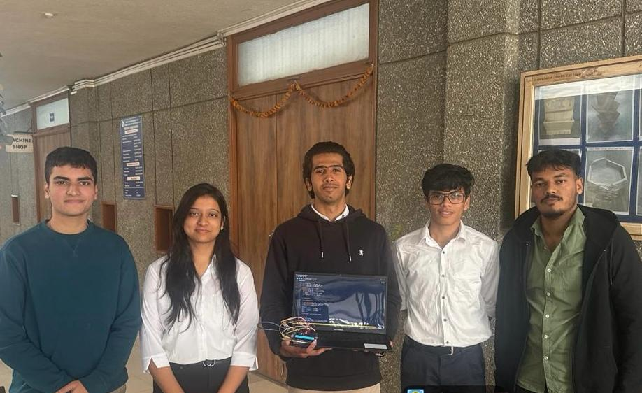

Real-Time Monitoring
Instant analysis of water quality parameters right from your device.
Live Analysis
Photodiode Reading
ADC Units
Connect your Arduino to begin scanning
How It Works
All readings are based on photodiode ADC values measured in real time. Use this scale to understand your water quality output.
Water is clean and safe for consumption. Photodiode detects high light transmission indicating low particle interference.
Water quality is below safe threshold. Moderate particle interference detected. Not recommended for drinking.
Dangerous levels of microplastics detected. High particle interference blocking light transmission significantly.
⚙ Values are based on photodiode ADC readings ranging from 0 to 1023. Higher values indicate clearer water with less particle interference.
Stay Safe
If your water scan shows unsafe levels, here are the most effective ways to purify your water before consumption.
Bring water to a full rolling boil for at least 1 minute. This kills most bacteria, viruses and pathogens effectively.
Most EffectiveMicrofilters with pore sizes of 0.1–0.4 microns can physically remove microplastics and large contaminants from water.
MicroplasticsCarbon filters absorb chemicals, heavy metals and organic compounds improving taste, odor and overall water safety.
Chemical RemovalUltraviolet light disrupts the DNA of microorganisms rendering them harmless. Highly effective against bacteria and viruses.
Bacteria & VirusesAdding a small measured amount of chlorine to water kills most harmful microorganisms. Widely used in municipal water treatment.
DisinfectionForces water through a semi-permeable membrane removing up to 99% of contaminants including microplastics, salts and heavy metals.
Deep PurificationNote — These tips are general guidelines. Always consult a water quality professional for severely contaminated water sources.
The People Behind It
A dedicated group of students passionate about water quality research and building technology that makes a difference.

Contributed to the hardware assembly of the scanning module and wrote the core Arduino code responsible for reading and transmitting photodiode sensor values. Ensured stable and accurate communication between the hardware and the website.
Responsible for the original concept and foundation of the project. Led the development of the website from the ground up while conducting core research into water quality detection methods and photodiode-based scanning systems.
Conducted in-depth research into water quality parameters and microplastic detection. Played a key role in the physical assembly and testing of the hardware components including the photodiode sensor module and circuit connections.
Assisted in the hardware assembly of the scanning module and contributed to the Arduino code development for reading and transmitting photodiode sensor values. Worked closely alongside the team to ensure consistent and reliable sensor performance.
Contributed to the overall project as a group member, supporting the team throughout the development and research phases of the water quality scanning system.